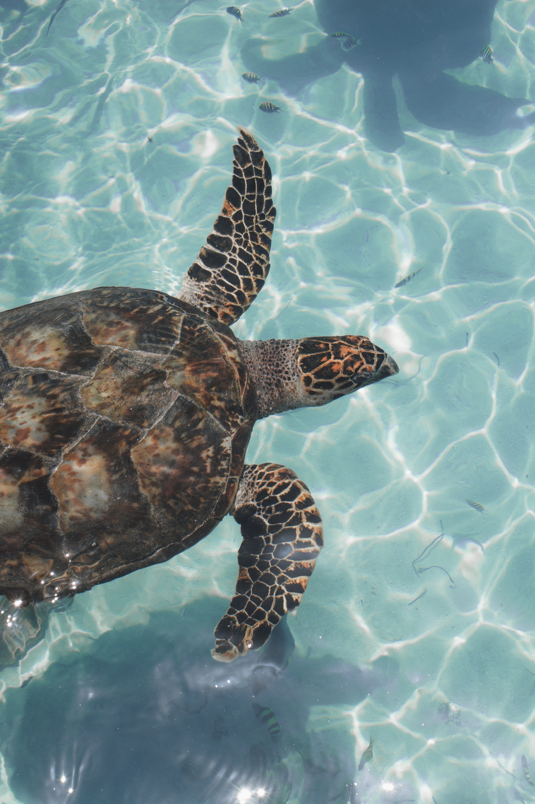

Welcome to shell heaven
Explore...
About Us
Welcome to our website dedicated to showcasing the magnificent turtle hatcheries of Sri Lanka.
Our mission is to raise awareness and promote the conservation of these incredible creatures, which play an essential role in the marine ecosystem. By visiting our website, you'll discover the remarkable work being done to protect the turtle population in Sri Lanka, and you'll learn about the various species of turtles that call this country home.
We strive to provide a comprehensive overview of the hatcheries, their history, and the efforts being made to protect these gentle giants for future generations.
Join us on this journey of discovery, and experience the wonder and beauty of Sri Lanka's turtle hatcheries.
-
If your heart dances to the rhythm of generosity, pirouette towards our donation page and grace us with your support.
Introduction
Sri Lanka, a tropical island nestled in the Indian Ocean, is home to a diverse and thriving turtle population. With its pristine beaches and abundant coastal ecosystems, this enchanting island serves as a crucial nesting ground and haven for several turtle species.
- The Green Turtle (Chelonia mydas)
- The Hawksbill Turtle (Eretmochelys imbricata)
- The Loggerhead Turtle (Caretta caretta)
- The Olive Ridley Turtle (Lepidochelys olivacea)
- The Leatherback Turtle (Dermochelys coriacea)
During the nesting season, which typically occurs between November and April, Sri Lanka's beaches witness a remarkable phenomenon as female turtles emerge from the depths of the ocean to lay their eggs. Each species exhibits unique nesting behaviors and preferences, with some turtles returning to the same beach where they hatched years ago.Conservation efforts in Sri Lanka have recognized the importance of protecting these nesting sites and implementing measures to ensure the survival of turtle populations. Local organizations, government initiatives, and community-based conservation projects work tirelessly to safeguard these fragile habitats, combat poaching, and educate the public about the importance of turtle conservation.
Sri Lanka's commitment to preserving its turtle population is showcased through numerous initiatives, such as the establishment of turtle hatcheries along the coastline. These hatcheries rescue eggs from vulnerable nesting sites, protecting them from natural predators and human interference. Once the hatchlings emerge, they are carefully released into the ocean, increasing their chances of survival and contributing to the growth of the turtle population.
Turtle conservation in Sri Lanka also extends beyond the nesting beaches. The island's rich marine ecosystems provide ample feeding grounds for turtles, offering them a diverse diet of seagrasses, algae, jellyfish, and other marine organisms. These habitats are crucial for the long-term survival and well-being of the turtles, making efforts to preserve and restore these ecosystems vital.
Events & News
In recent years, Sri Lanka has made significant strides in the conservation of its turtle population, with various initiatives and efforts aimed at safeguarding these remarkable creatures. This section highlights notable events and news related to turtle conservation in Sri Lanka, showcasing the inspiring success stories and ongoing efforts to protect and preserve these endangered species.
Navy turtle project releases over 100 hatchlings
The Sri Lanka Navy released 146 sea turtle hatchlings at Panama beach on 21st March 2023, in a bid to save these endangered marine animal.The Commander Southeastern Naval Area, Rear Admiral Kanchana Banagoda was also in attendance on this occasion where the hatchlings were released. As part of the Turtle Conservation Project of the Sri Lanka Navy, the eggs of these hatchlings were conserved at the Turtle Conservation Unit in SLNS Mahanaga.
Read More
Posted on 3 rd of March 2023
Turtles return to nest on Colombo's shores in rare event
Olive Ridley turtles have been coming ashore at a stretch of naturally formed beach near Galle Face to lay eggs. The Open University ' s senior zoology lecturer, Dr Saminda Fernando, said the sighting of the species, Lepidochelys olivacea, had dropped during the construction of the port city when sand was dredged.
But now a natural sandy area has formed near the area where the Beira Lake opens up to the sea.
Read More
Posted on 12 th of March 2023
Hundreds of dead turtles wash ashore in Sri Lanka weeks after cargo ship sinks off coast
Hundreds of turtles have washed ashore after a ship caught fire and sank off the west coast of Sri Lanka in June in the country's worst-ever marine disaster, a court in Colombo heard this week.Hundreds of turtles have washed ashore after a ship caught fire and sank off the west coast of Sri Lanka in June in the country's worst-ever marine disaster, a court in Colombo heard this week.
Read More
Posted on 2 nd of July 2021

Kosgoda Turtle Hatchery,Galle
On the south coast of Sri Lanka, turtles have laid their eggs for generations. Swimming in from the Indian Ocean, they drag themselves up the sand on the beaches near the city of Galle and dig their nests, where they leave the eggs.
Turtles usually lay more than a hundred eggs, so enough make it through to keep the species going. The rest become food for predators, which helps those species survive.
Read More
Posted on 13 th of February 2023
.jpg)
.jpg)
.jpg)